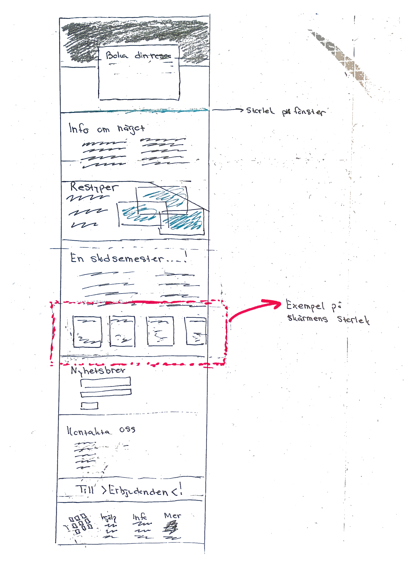
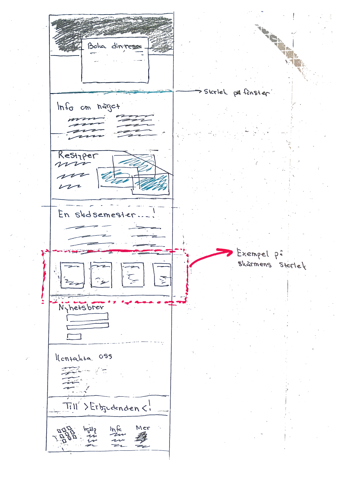
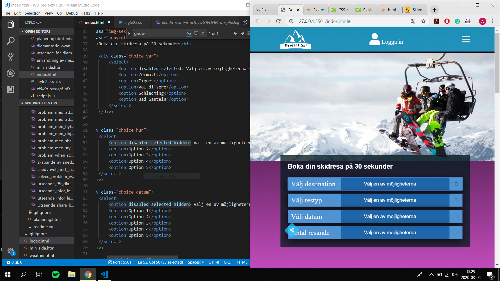

Jag försöker designa en webbsida som skulle kunna representera en resebyrås hemsida. I projektet planerar jag att begränsa inehållet till vintersport och skidåkning eftersom att innehållet i sidan annars hade kunnat bli för stort och svårhanterligt.
Målet med min design är att folk på ett enkelt sätt ska kunna hitta information om olika resorter, dess egenskaper samt kunna logga in och göra en bokning. En av de saker som jag värderar högt i projektet är att sidan ska vara användarvänlig och kunna användas av personer i alla åldrar på ett enkelt och intuitivt sätt ska förstå hur sidan fungerar och kunna navigera sig mellan sub-hemsidorna genom olika menyer och tillval. För att detta ska vara möjligt tror jag även att det är viktigt att använda sig av media-queries och på så sätt göra sidan layout så bra anpassad till den aktuella skärmstorleken som möjligt. Jag planerar av denna anledningen att anpassa sidan till mobiltelefoner, större tablets och för datoranvändare. Målet är att menyer, tillvalsrutor och utseende på grid-systemet ska förändras beroende på just detta.
Det finns inte någon särsklit specefik målgrupp för just denna sidan. Den riktar sig nämligen till personer i alla åldrar, även om det egentligen främst är personer i åldern mellan 18 och 60 som skulle vara intresserade av att boka en skidresa. En stor utmaning som jag tvingats fundera kring är om min sida enbart ska rikta sig till svenskar (personer som förstår det svenska språket) eller även ha ett tillval att kunna se informationen på engelska. Detta skulle man isåfall kunna göra genom att ha dubbelt så många html-dokument varav varje standard-dokement har en motsvarighet vars inehåll och styling, bortsett från språket, är den samma som i standard-sokumentet. Isåfall hade jag kunnat lägga till en ruta i form av en "div" där man tvingas välja mellan att få informationen på svenska eller engelska. En ruta som maan, när man gjort sitt tillval, försvinner och gör att man kan använda sidan.
Observera att denna idébeskrivningen skrevs på en av de tidgare lektionerna och att produkten utvecklats till att bli lite annorlunda från den ursprungliga planen.
Den översta bilden är från lektion 1, de övriga är omgjorda efter att jag strukturerat om och försökt planera om mina layouter. Eftersom att gridsystem inehåller så många komponenter och är anpassade till så många olika fall har jag valt att inte beskriva dess exakta utseende och antal kolumner med hjälp av text här. Jag antar vidare att det är ganska uppenbart var det behövs flera kolumner i sidled och var det inte behövs det.
 

| Vecka | På lektionen | Utanför lektionen |
|---|---|---|
| 4 |
Starta upp projektet genom att forka mallen från git-hub. Börja planera inehåll och syfte samt utvärdera målgrupp för sidan. Fundera på grundläggande layout och användargränsnitt. |
Planera färdigt grunden i projektet genom att färdigställa planeringen för lektionerna, inehåll och layout för sidan. Detta kommer dock vara något som eventuellt behöver justeras i ett senare stadie. Vidare planerar jag också att färdigställa en första skiss på hur layouten för index.html kan se ut. I detta stadiet har jag inte planerat att inkludera alla element eller några mått som nämnt att man ska göra ovan, utan enbart skapa det som ett sätt att greppa problemet och ta inspiration från. Eftersom att jag vidare påbörjat arbetet med att skapa grunden i ett menysystem kommer jag att försöka färdigställa detta till nästa lektion. |
| 5 |
Jag har planerat att ha menysystemet färdigställt till denna lektionen för att eventuellt kunna utveckla detta under senare lektioner då jag implementerar ytliggare funktioner och innehåll. Att ha grunden färdig med css och java-script bör dock vara möjligt. Samtidgt har jag under tiden fram tills denna lektionen också hittat en givande youtube-genomgång för hur man kan skapa ett menysystem likt det jag planerar att använda mig av. (Se länk: https://www.youtube.com/watch?v=BN6fH1nRDxA ). Under arbetet har jag kombinerat mina tidgare kunskaper och innehåll från tidgare projekt med kunskapen jag fått från denna video för att skapa ett menysstem i nav-taggen som ska fungera så bra som möjligt och ha ett bra lättförståeligt användargränsnitt. Då jag dock inte läst någon gränsnittsdesign får jag för att göra detta mest ta inspiration från andra sidor och gå på mina egna tankar om användargränsitt. Vidare planerar jag också att skapa en unik layout med rutor (i form av div-element) som man ska kunna använda sig för att se vart på sidan man är och eventuellt kunna navigera sig med. I ett senare stadie (vecka 8) har jag dock bestämt mig för att justera hur detta delvis skapade gridsystem ska se ut och användas. Eftersom att sidan ska fungera som en resebyrås webbsida har jag beslutat att denna ska användas för att snabbt kunna navigera sig mellan olika resmål för att endast genom ett par klick kunna boka en resa. (För mer information: se dokumentation vecka 8) |
Fram till nästkommande lektion planerar jag att slutföra denna delen och gå vidare till att faktiskt skapa strukturen för sidan och bland annat välja ut innehåll och bilder som passar sidans syfte. Jag har även planerat att fortsätta med skapandet av "social-media-share-buttons" som jag påbörjat under den föregående lektionen. Eftersom detta innbar att jag skulle behöva arbeta mycket med komplicerat java-script i samband med det lite komlicerade sättet att justera mellan att visa och inte visa dessa div-elementen på sidan. Vidare var det även nytt för mig att använda mig av symboler och ett snedvridit grid för att ge det utseendet som jag ville ha. För att lyckas med detta tog jag hjälp av en video tutorial (se länk: https://www.youtube.com/watch?v=T7AIYx8QEfY). Denna visade dock inte något av java-scriptet vilket jag därför fick lösa på egen hand. |
| 6 |
Färdigställande av menysystem och diamond-grid samt lösning av alla de mindre problem som upkommit under vägen. |
Sluföra detta om detta tar längre tid än planerat. |
| 8 |
>Göra färdigt väder-sidan helt samtidigt som dokumentationen måste göras färdigt tillsammans med planeringen som behöver läggas in i vs-code och eventuellt justeras från tidgare planering som var väldigt grov och inte innebar mer än ett fokus på att göra färdigt något annat än en sida av de fem planerade sidorna per lektionstilfälle. Eftersom jag nu bestämmt innehåller för respektive sida och planerat för mer detaljerade layouter och utseenden på webbplatsen kan jag nu planera mer djupgående. Vidare har jag också lite nya problem som jag måste åtgärda efter att jag av misstag måste ha justerat koden i css som påverkat fler objekt och dess funktioner än vad mina aktioner var menade att göra. |
>Då jag troligen inte hinner med att utföra detta på lektionstiden planerar jag att göra detta även hemma. |
| 9 |
Färdigställande av index.html med inehåll bilder samt möjlighet att välja mellan olika resmål och boenden. Även färdigställande av andra mindre problem och de resterande html-sidor som jag skapat ska utföras. Att fixa delnings-funktionen och att göra inloggning möjligt är exempel på detta. |
Då jag troligen inte hinner med att utföra detta på lektionstiden planerar jag att göra detta även hemma likt lektion 8. |
| 10 | Skapande och färdigställande av sida med mer information om de olika skidorterna, även här med möjlighet till bokning som från startsidan. | |
| 11 | Skapande och färdigställande av den sista sidan med erbjudanden om speciella resmål. | |
| 12 | Buffert-lektion då jag har tid att lösa alla de problem och saker som jag inte haft tid att utföra än. Att bygga ut målgrupps- och idébeskrivningen kan vara exempel på detta. Andra exempel kan vara att lösa problematiken med småsaker och det som nädes vid planeringen av lektion vecka 9. |
Idag har jag startat upp mitt arbete genom att forka mallen från git-hub. Vidare har jag under lektiontiden påbörjat mitt planeringstadie genom att skissa på en enklare mall för hur den fösta sidan ska se ut för mobilanvändare och hur layouten ska förändras när skärmstorleken förändras till storleken för en ipad eller för en dator. Jag vill nämligen att strukturen ska skilja sig mellan både mobil-, surfplatta- och datoranvändare på ett sådant sätt att layouten är mer lik mellan surfplatta- och datoranvändare. I detta tidigaste stadie är jag ännu osäker på vad för innehåll min sida ska ha. Av dennna anledningen har jag istället påbörjat skapandet av ett menysystem. För att sidan ska bli lättanvänd har jag valt att datoranvändare skall ha menyn tydlig i nav-blocket synlig direkt medan man som mobilanvändare kan ha en meny som först blir synlig när en burger klickas. Under lektionen hade jag mindre problem med att fixa detta. Anledningen tror jag främst kan vara att jag när jag gjort en meny på detta sättet tidigare utgått från datoranvändare först vilket nu gör att jag måste arbeta lite baklänges för att göra omvänt (mobile first). Jag hann inte med att fixa denna delen under lektionen utan jag planerar att studera vilka delar som måste förändras för att det ska fungera lite nogare fram till nästa lektionstillfälle. Fram till nästa lektion planerar jag också att ha fått en klarare bild av vad min sidas syfte ska vara för att på så sätt kunna anpassa designen för detta syftet. Bilden nedan visar hur långt jag kommit med att skapa detta:

Under den här lektionen har jag planerat att skapa grunden till en layout som alla mina html dokument ska utgå ifrån. Jag planerar att skapa en unik layout med rutor för att visa vart på sidan man befinner sig och sedan eventuellt kunna använda denna för navigering. För att påbörja arbetet har jag ritat en enkel skiss som jag sedan kommer att utgå från och eventuellt förbättra under mitt arbete med att implementera konceptet på sidan. Vidare är jag dock osäker på hur sidans layout ska skilja sig åt mellan de olika sidorna och på vilket sätt ska kan använda mina kunskaper för att implementera diverse olika funktioner som gör sidan lättanvänd, anpassad efter olika enheter och samtidgt esetetisk.
Jag har tidgare funderat på att skapa en struktur bestående av oktagonala former som jag kan fylla med information. På så sätt hade detta gett en estetisk layout med former som främst tänkte användas för att inehålla bilder och eventuellt signalera på vilken del av sidan som man befinner sig. Det som hade gjort denna strukturen så bra är att man hade kunnat kombinera bilder som tar upp olika många rutor samtigt som man ändå behåller en detaljerad och konsekvent stuktur. Vidare funderade jag även på att dessa ska symbolisera sidans innehåll och att man genom att klicka på någon av figurerna direkt ska tas till denna delen av sidan. Antingen om all information inte direkt ska vara synlig eller om man helt enkelt snabbt ska kunna ta sig längre ned på den sidan man befinner sig. (Detta var främst tänkt för huvudsidan: index.html, men kan även komma att implementeras på de andra med andra bilder som leder till olika platser inom samma html-dokument). För att få bättre förståelse för konceptet se väldigt grundläggnde skiss nedan:

Eftersom detta verkar vara väldigt jobbigt att implementera med hjälp av css-grid kommer jag troligen satsa på en något mindre komplicerad layout med ett grid roterat 45-grader. Detta kommer ge en liknande effekt samtidigt som det är enkelt att implempentera då det enkelt kan göras med ett vanligt grid-system.
I övrigt planerar jag också att skapa en social-media sharing button lista för att kunna dela innehållet på sidan. För att göra detta kommer jag dock behöva läsa på lite gällande mer avancerade domskript och hur dessa kan användas. För att få denna list-menyn att se estetisk ut vill jag även att den ska kunna visas genom ett klick och stängas genom ett klick. Detta kommer också kräva java-script men detta kommer vara betydligt enklare att göra.
På grund av tidsbrist och problem med hur jag skulle centrera och styla min share-button list hann jag inte riktigt med att slutföra java-scriptet då det visade sig vara lite mer komplicerat än vad jag först trott. Fram till nästkommande lektion planerar jag att slutföra denna delen och gå vidare till att faktiskt skapa strukturen för sidan och välja ut de bilder som passar bäst. Viktigt att tänka på är ju också att jag inte kan använda alla bilder som jag kanske velat då flera av dem befinner sig under copy-right skydd eller helt enkelt inte får användas eller modifieras på det sätt som jag vill.
Nedan visas ett mindre problem som jag tvingades överstiga. Tidigare hade jag strukturerat upp knapparna genom att använda 'Display: inline-block;' men eftersom jag samtidigt ville centrera inehållet i dessa div-taggarna genom att göra div:en till en flex-föräldermed hjälp av 'Display: flex;' var detta inte möjligt. Istället var jag tvungen att lägga div-taggarna i en större div och låta den fungera som ett grid-system. På så sätt kunde jag både få min önskade layout och centrera dess innehåll.
Nedan kan man tydligt se hur div-elementen placerades med hjälp av "display: flex;" vilket gjorde att symbolerna (flex-barn) placerades i mitten av deras flex-förälder. Vidare kan man också se hur gridet är vridit 45 grader och att symbolerna samtidgt är tillbakaroterade för att vara åt rätt håll.
.PNG)
Utöver detta har jag också bestämmt vilket syfte min webbsida ska ha och därmed kunnat förbreda vilket inehåll och vilka funktioner som sidan ska erbjuda. Detta har jag sammanställt så att det kan visas under rubriken: idébeskrivning. Sammanfattningsvis kan dock förklaras att sidan ska fungera som en resebyrås hemsida där man på ett enkelt sätt ska kunna undersöka olika resemöjligheten och genom endast ett fåtal knapptryck kunna logga in och boka en resa. Att kunna skapa konton och logga in är dock något som fortfarande ligger under planering eftersom det innebär att jag ska använda mig av java-script som ligger långt över det som jag lyckats lära mig genom genomgångarna i kursen. Samtidigt funderar jag även över målgruppen - Eftersom sidans syfte är att erbjuda möjlighet att boka skidresor med en svensk resebyrå funderar jag kring om sidan verkligen behöver ha möjlighet att byta språk till engelska från svenska eller om symbolerna behöver kunna tolkas av ett uppläsnings-program för de med synsvårighter. Eftersom målgruppen är personer som ska åka skidor, vilket kräver förhållandevis god syn, kanske detta inte nödvändigt att lägga stort fokus vid att göra dessa anpassningar.
Fram tills lektionen denna veckan har jag arbetat med att helt färdigställa menyn för att kunna dela sidans innehåll på diverse olika sociala medier. Eftersom jag dock inte hunnit lägga tid på att faktsikt få länkarna att exempelvis leda till en facebooksida med ett förskrivet meddelande har jag valt att inte ännu länka till hemsidorna. För att testa den har jag dock länkat till instagram-sidan. Genom att använda mig av "target="_blank"" behåller jag också känslan av att vara på samma sida mellan olika val på min sida medans detta visar att man kommer till ett annat företags webbplats och att man, för att fortsätta navigera mellan mina sidor, får vara kvar på sin befintliga flik. Se bild nedan för utseendet:
Det befintliga utseendet på denna menyn. Just nu är muspekaren placerad så att den hoovrar över instagram-symbolen vilken därför är markerad med vitt samtidgt som ikonen i mitten bytt färg från vitt till svart.
Ett av de problem som jag tvingades lösa under denna processen var också att justera storleken på den wrapper som elementen ligger i. Egentligen ville jag inte använda pixlar men för att få menyn att fungera responsivt väljer jag nu att göra detta ändå. Jag planerar att eventuellt justera dela-menyns storlek med hjälp av media-queries om det finns ett behov av detta. Nedan visas hur jag hade problem med detta medans jag angett måtten i view height och view width.


Nean visas flera bilder av hur sidan såg ut vid början av detta lektionspasset.


Vilket visas tydligt genom dessa två bilder har jag även slutfört skapandet av menysystemet i nav:en genom att justera hur menyen ser ut beroende på skärmstorlek och därmed beroende på vilken typ av enhet sidan besöks med. Detta har jag gjort med hjälp av media media-queries samtidgt som jag lagt stort fokus vis att sidan ska vara mobile-first och därmed, vid mindre skärmbredd, vara mobilanvändarvänlig.
Under lektionen har jag vidare också fortsatt med skapandet av det andra snedvridna grid-system som jag möjligtvis ska använda för att navigera mig i höjdled mellan olika delar av index.html genom ett enkelt knapptryck. Detta skpandet har dock visat sig vara mer komplicerat än jag först trott. För att ordna upp det för mig själv inledde jag med att skissa med papper och penna hur gridet skulle se ut och vilka områden i gridet som skulle vara färgade (dessa var det som jag ville ha innehåll i). Jag har med andra ord övergivit den något "omöjliga" idé att göra ett grid-system med oktagonala områden. Se bild nedan för att förstå tydligare hur jag använder mig av grid för att åstadkomma det utseendet jag ville ha på sidan.


Jag implementerade detta men hade lite problem med att namnge alla områden rätt eftersom det var väldigt många grid-areor samtidgt som arbetet lätt blir fel när man kopierar samma kod flera gånger och ändrar små delar för specefika grid-barn. Nedan är en bild av hur grid-systemet såg ut i början av denna process.

I bilden visas hur detta snedvridna grid-system är fyllt med ett anatl vita grid-barn. Dessa är ännu inte placerade på sina rätta positioner.
Som beskrivit ovan hade jag problem med att placera blocken på rätt sätt. Detta berodde på att jag använt mig av kopiera-klistra in flera gånger och därmed glömt att justera vissa av grid-barnens benämningar och grid-areor. Eftersomjag lästa igenom koden mer nogrannt lyckades jag enkelt lösa detta. Se bild nedan.

För att färdigställa detta gridsystem kommer det dock att krävas bilder som innehåll och lite enkelt java-script för att få systemet att faktiskt fungera. Vad syftet ska vara har jag dock blivit osäker på eftersom jag samtidgt känner att det kan bli lite överflödigt att använda det som menysystem. Jag har dock ändå testat att fylla det med bilder från unsplash för att testa utseendet.

Det visade sig dock att det fanns ett stort problem med hur detta grid-systemet var skapat. Eftersom det inte bara bestod av de områden som det nu ligger bilder i tar gridet nu upp väldigt mycket större plats. Då det tar upp så mycket plats att det täcker över det ursprungliga menysystem går detta inte att använda eftersom klick inte kan registreras som klick på länkarna i nav-taggen utan registreras som klick på den nya div:en (gridsystemet som jag precis skapat). För att förstå bättre: se bild nedan.
För att lösa detta problemet fick jag kolla på w3 schools och stack overflow. Jag kom då fram till att jag skulle ändra placeringen i Z-led vilket då skulle göra att man fortfarande kunde klicka på länkarna i menyn.

Under perioden mellan lektionen vecka 6 och lektionen vecka 8 har jag känt att det var viktigt att komma lite i fas med arbetet. Jag har därför påbörjat och nästintill slufört skapandet av en inloggningssida som också har möjlighet att fungera för att registerera sig eller skapa ett konto. Än så länge har jag inte löst eller undersökt möjlighten att använda mig av java-script för att göra inloggningen fullt fungerande utan jag har istället fokuserat på det visuella i css och gjort det möjligt att fylla i fälten med text. Jag har även använt mig av java-script för att justera sidan mellan att visa inloggnings- respektive registrings-formuläret. Under skapandet av detta var jag väldigt osäker på hur man skulle använda input-taggen tillsammans med placeholders och olika typer av input. Av denna anledning tog jag mykcet hjälp från en youtube video se länk.
https://www.youtube.com/watch?v=h5MyIjZbCzcVad jag dock först insåg i slutet av denna genomgång var att man inte visade hur man skulle bära sig åt för att skapa den funktionalitet som registrerings-/inloggningsformuläret har på min sida. Av denna orska var jag tvungen att lösa detta själv.
Detta gjorde jag genom att studera liknand elösningar på problemet med hjälp av diverse olika youtube-genomgångar och artiklar på w3 schools och stack overflow. Genom dessa artiklar lärde jag mig även att använda mig av $-tecknet för att skriva java-koden på ett smidigare mer tidseffektivt sätt. Något som jag dock fortfarande är lite osäker på och behöver kolla upp nogare är hur man använder querySelectorAll för att markera flera objekt inom samma klass för att på så sätt optimera min kod rent platsmässigt då detta had egjort att jag sluppt skriva nästintill identisk kod flera gånger.Samtidigt som jag försökte lösa detta hade jag även stora problem med att imlementera den nya koden tillsammans med min tidigare kod eftersom jag inte använt klasser till alla olika objekt utan exempelvis stylat alla p-taggar och länkar på ett visst vis. Vidare hade jag också problem med att kombinera objektens position på rätt sätt för att få detta formuläret att bli responsivt och vra anpassat till såväl dator- som mobil-användare. Detta är något som jag ännu inte hunnit fokusera på utan planerar att lösa på lektionen nästkommandevecka på grund av den höga arbetsbelastningen i andra kurser. Detta är vidare också anledningen till att jag inte kunnat uppdatera min dokumentation så regelbundet utifrån de anteckningar och bilder som jag tagit under arbetets gång.
I denna översta bilden tydliggörs hur jag efter att ha testat att följa denna videogenomgång inte lyckats lösa varken utseendet eller funktionaliteten för inloggningsformuläret. Genom kvalificerade gissningar kom jag fram till att orsaken måste vara bland annat att min css kod skriver över sig själv och därmed inte ger objekten de egenskaper och utseenden som de ska ha. Genom att gå igenom koden igen och systemeatisk undersöka vilka element som givits egenskaper flera gånger lyckades jag lösa utseendet för såväl mitt inloggningsformulär och min ursprungliga layout för denna sidan. Detta var dock ganska tidkrävande arbete där jag lätt gjorde misstag. Vidare var jag inte heller säker på att detta skulle lösa mina problem fullständigt eftersom jag även hade viktiga delar att förändra i den css-kod som jag redan skrivit. Genom att undersöka och testa mig fram har jag dock lyckats lösa dessa problem samtidgt som jag lyckats få den något problematiska koden för navigationsmenyn att fungera tillsammans med detta.

Nedan visas en bild från hur jag systematiskt genom att skapa ett helt nytt css dokument lyckats lösa problemen.


Ett stort problem som fortfarande kvarstår är dock anpassningen till olika skärmstorlekar. Något som jag med hjälp av media-queries planerar att lösa. Samtidigt känner jag ett stort behov av att inte bara följa en färdig genomgång utan att implementera tekniken för att skapa något eget. Detta är dock något som jag kommer behöva fundera på hur jag ska gå tillväga för att åstadkomma. Jag tror dock att inspiration är en viktig faktor i att lyckas skap en bra hemsida eftersom att jag själv saknar erferenhet i hur man kan ska skapa en layput som ser estestesk ut samtidigt som den är användarvänlig. Efter att ha tagit inspiration från andra sidor med liknande syfte kom jag exemeplvis fram till att det skulle se snyggare ut att fylla hela sidan med menyn som visas för mobiltelefoner när den aktiveras. Detta var en snabb justering men som fått följden att dela-knappen fått en felaktig position i z-led. Detta beskrivs mer tydligt längre ned i dokumentationen.
Idag under lektionen har jag även påbörjat skapandet av en av mina andra sub-hemsidor. Denna sidan är tänkt att vara en väder-sida där man ska kunna se värder för olika dagar på olika orter. För att detta ska kunna vara snyggt och tydligt har jag planerat att göra flera av den typen av ruta som jag påbörjat arbeta med. För att det ska bli extra tydligt har jag även valt att använda mig av linjer mellan informationen tillsammans med många symboler för att visa vädret. Här kan det dock finnas ett behov av att på något sätt, lik så som man gör med bilder, för att göra sidan anpassad för de som inte kan se symbolerna.
Jag har påbörjat detta genom att skapa ett div-element som jag givit en bakgrund samtidgt som jag börjat fylla på med exempel på väder. För att göra det extra tydligt har jag använt mig av många symboler samtidgt som jag lagt in linjer mellan informationen. Jag hade dock först problem med att ta bort den nedersta linjen tills jag tog hjälp av google och hittade det enkla sättet sättet att markera ett speciellt objekt.
.forecast li:nth-child(3){ border-bottom: none; }.
Vidare hade jag också mindre problem med att använda mig av java-scriptet för att animera hur man ska genom ett klick på informationssymbolen skulle kunna se mer information om vädret. Problemet var helt enkelt att jag hade glömt att skriva den nedersta raden som får funktionen att köras - se bild.
För att få allt att fungera implementerade jag även mer java-script så att man även ska kunna gå tillbaka.
Ett problem som kvarstår till kommande lektion är att dela-menyn har fått en förändrad storlek på grund av någon feljustering i css. Samtidigt ligger den också i fel z-lager då den hamnar ovanför den huvudsakliga menyn när den aktiveras genom ett klick på burgaren i högra hörnet. Detta bör dock vara enkelt all lösa genom att justera z-index för objekten.
Detta problemet löste jag först under ett senare lektionstilfälle. Eftersom att z-index inte fungerade som det skulle anväde jag mig istället av display: none;och fick på så sätt skapa en ny klass för såväldet förtsa som det andra objektet.
Mitt främsta fokus under lektionstillfället, och tiden fram tills lektionen vecka 10, har varit att färdigställa de sidor som jag redan skapat. Till min hjälp har jag haft ett skissblock som hjälp mig mycket under planeringen och designen av siornas utseende. När jag försökt implementera idéer på sidan har jag dock mötts av flertalet problem och jag har därför ofta behövt tänka om och förändra idéerna och hur jag skriver koden för att skapa det önskade utseendet.
Under procesen där sidan ska anpassa för både dator- och mobil-användare har detta varit extra tydligt. I många fall har stylingen i css behövts förändras och jag har haft svårt att studera effekterna för båda skärmbredderna samtidigt. För att förenkla arbetet för mig har jag använt mig av live-server för att visa dator-layoutens utseende samtidgt som jag, med hjälp av live-server funktionerna som ruby erbjuder, även visat hemsidan på min egna telefon. Vidare har jag varit tvugen att använda mig mycket av media queries för att göra skiljande utseenden möjliga. Jag har i de flesta fall utgått från mobil-layouten, men det förekommer också fall där jag först gjort pc-layouten för att sedan lägga in detta innehållet i en media-querie för när skärmbredden överstiger ett visst pixel-värde.
Ett exempel på detta är hur jag under skapandet av en mobilanpasad version av mitt inloggningsformulär lade stylingen som jag redan skrivit i en media-querie medan jag designade utseendet för den mobilanpassade versionen. Detta fungerade till en början bra då formuläret fick det önskade utseendet. Vad jag dock märkte var att jag hade lagt in kod som även förändrade egenskaperna för det som låg i media-querien. För att på ett enkelt sätt lösa detta problemet lade jag in detta inehållet i en media-querie fast med en begränsing för maximal skärmbredd. Detta innbar att jag tvingades använda mig av en kod där vissa delar var samma för såväl den mobil-anpassade som för den datoranpassade versionen. Detta är något som jag kan lösa genom att lägga dessa delar utanför media-queriesen, men eftersom detta innebär att strukturen i mitt css-dokument skulle bli svårare att hantera och läsa har jag inte lagt något fokus på detta än. Jag tror dock att det finns vikt i att göra detta för att minska antalet rader kod och förenkla läsbarheten (förutsatt att det läggs fokus på en god struktur).
På bilden ovan visas hur utseendet påverkades då viss css-kod ämnad till den mobil-anpassade layouen även påverkade layouten och stylingen för den dator-anpassade varianten.

Under lektionstillfället har jag även färdigställt mitt diamant-grid-system som fungerar som en genväg till en specefik del av sidan där man kan hitta information om just detta område man valt. Jag har av denna anledning valt att länka till id på samma sida där denna informationen finns. Vidare har jag lagt länken på hela diven för att föenkla klick och jag har gjort det visuellt tydligt vad man klickar på genom att byta färg på elementet och den text det innehåller när man hovrar över det. Samtidgt har jag också använt mig av linear-gradient för att ge en unik look till menyn. Jag tyckte personligen att detta passade bättre än radial-gardient eller varianter med mer än två färger.
När man markerar någon av dessa ville jag också att det skulle ges visuell feedback genom att ändra färg på den ruta man hovrar över. Problemet med detta var dock att detta gjorde att även de andra rutorna som sakanr länkar kunde markeras. Detta löste jag genom att längre ned i dokumentet (så att det tidigare skrivs över) ge styling för när just dessa element hovras över. I och med detta passade jag även på att med hjälp av media-queries förändra storlek på texten och grid-systemet baserat på skärmvidd. För att placera elemntet i mitten av sidan positionerade jag det relativt till dess närmasta förälder och valde, istället för att använda mig av display: flex på något sätt för att centrera inehållet, att sätta avstånd från vänster till differensen mellan sidans bredd och elementets bredd delat på två för att centrarear lementet. Se bild!


Under denna processen hade jag dock stora problem med att placera detta div-elementet i z-led. Det placerades nämligen lätt ovanför mitt huvudskaliga menysystem, men när jag justerade detta hamnade det antingen ovanför mina social-media-share-buttons eller under något annat element som gjorde att klickande på länkarna blev omöjligt. Detta är något som jag tar med mig till kommande lektion för att lösa. Detta problemet löste jag först under ett senare lektionstilfälle. Eftersom att z-index inte fungerade som det skulle anväde jag mig istället av display: none;och fick på så sätt skapa en ny klass för såväl social-media-share-buttons som detta div-element. Genom att förändra klassen för objekten vid klick på burgaren kunde jag enkelt göra detta.

Vad jag dock insåg var att detta gjorde att java-scriptet helt slutade att fungera på de andra två sidorna som saknade diamantgridet. På grund av att man inte kan ta classList av null. Jag behövde därför lägga till if-testet if (diamondGrid != null) så att jag kunde undvika att göra detta och därmed hindra koden från att fungera.
I övrigt har jag också löst problem som med anpassning till skärmstorlek när det kommer till vädersidan. Detta genom att använda mig av många olika media-queries och på så sätt förändra grid-template-areas.
Jag har också påbörjat färdigtsällandet av min snabb-boknings-meny som endast består av html och css. Även här hade jag dock mindre problem som jag tvingats att hantera och försöka att lösa.
Till kommande lektion känner jag att jag behöver fokusera ytteliggare på dessa saker samt att färdigställa denna dokumentationen från de moment som jag arbetat med hemma innan detta nu kommande lektionstillfälle vecka 10.
Under detta lektionstillfället arbetade jag vidare med skapandet av min snabb-boknings-meny. Eftersom jag redan tidgare använt mycket java-script valde jag vid detta tilfället att istället lära mig mer om input-fält och selection-elementet och hur dessa kan användas i detta syftet (alltså för att ksap drop-down menyer). Jag hade till en början problem med hur jag skulle styla dessa till de utseende som jag eftersträvade men efter att ha kollat på olika youtube tutorials och w3 schools lärde jag mig att man kunde styla selection-elementet direkt medans input type="date"> inte lämpade sig lika mycket för detta. På mobilenheter visas dock inte samma utseende som på datorn och här krävs därför ingen mer styling än den som jag lykcats åstadkomma. Ska man dock styla utseendet på drop-down-menyn som visas på datorn krävs dock att man stylar väldigt många olika element. Den består nämligen inte enbart av ett utan av väldigt många små delelement som alla kan stylas i någon mån. Det är dock lite komplicerat och jag överväger därför att helt ersätta den med en egenskapd dropdown-meny. Detta skulle dock kräva väldigt mycket arbete och då jag upplever att jag redan använt mycket java-script samtidgt som css-koden som skulle krävas skulle vara simpel upllever jag inte att detta är något som jag ska fokusera på.

Jag förstod att jag enkelt kunnde styla storlek och färg på såväl selection-elementet och options-elementen som visas vid klick på selection-elementet. Eftersom ajg inte var helt nöjd med detta utseendet valde jag samtidgt också att använda mig av ::before för att skapa ett annat övertäckande element med beskrivning av innehållet. Jag passade Utöver detta på att göra en egengjord knapp för att visa options genom att använda mig av ::after. Jag lärde mig även här att använda symboler på ett nytt sätt. Tidgare hade jag enbart använt mig av typen 'i class="fas fa-cloud-sun-rain"', men nu fick jag istället testa på att använda mig av ikoner direkt i css med hjälp av unicode. Se bild.

Jag ersätte i ett senare stadie denna symbolen med en annan symbol. Under skapandet av dessa hade jag samtidgt mindre problem med positioneringen. Jag tyckte därför att det var enklast att göra det med hjälp av position: absolute; så att objekten positioneras relativt till dess närmsat förälder och sedan ge objekten den positionering som jag ville med hjälp av left: respektive right:. Jag hade dock mindre proble med att innehållet inte fick plats vilet jag åtgärdade genom att göra elementet något större. Se bilder nedan.


Samtidgt fick jag också använda mig av media-queries för att jusetera innehållets storlek beroende på skärmstorlek.
Eftersom jag strävade efter att positionera menyrutan så att denn låg lite över bilden på huvudsidan var jag också tvungen att förändra positioneringen av menyrutan med hjälp av media-queries. Även denna positionerade jag relativt till dess närmaste förälder och jag kunde därmed enbart justera höjden från toppen för att lösa mitt problem.
För att slutföra stylingen av dessa menyer ville jag också ha en placeholder. Vad jag insåg var att man inte på ett enklet sätt kunde åstadkomma detta som i input-fälten. Istället fick jag göra första objektet till en placeholder. Då gick ju denna givetvis också att välja vilket jag tyckte var fult och ville undvika. Genom diverse olika sökningar kom jag fram till att jag kunde lösa problemet genom att sätta denna option till "disabled selected hidden" vilket gjorde att detta valet först var valt men sedan inte kan väljas i drop-down-menyn igen.
Under detta lektionstillfället påbörjade jag mitt arbete med att skapa en footer där jag har diverse olika länkar som leder till olika delar på webbplatsen. Jag har främst länkat till speciella id:n för att komma direkt till en viss del sidorna, men jag har också länkat till html dokument. Som med resten av sidan har det varit viktigt för mig att den är anpassad till olika skärmstorlekar. Detta har jag åstadkommit med hjälp av media-queries. Eftersom jag började med att skapa footern för dator-layouten använde jag mig denna gången av "@media screen and (max-width: 750px){}" för att ge olika utseenden beroende på skärmstorlek. Jag förstår givetvis att detta i någon mån strider med konceptet mobile-first, men då det enda som jag förändrar med hjälp av denna media-querien är grid-layouten och textstorlek blir den enda konsekvensen att jag sparar lite tid i mitt kodande då jag undviker att ändra koden i efterhand. Orsaken till att jag gjorde på detta viset var att jag inte had emöjlighet att ansluta min telfon till skolans internet och därmed koppla upp mig för att se förändringarna direkt. De möjligheter som finns på datorn att visa sidan i mobilformat (exemeplvis i inspektorn) tycker jag fungerar mindre bra samtidgt som de ofta missar de problem som uppkommer när sidan visas på en faktisk mobilenhet.
Ett exempel på detta var input-taggen (input type="date" id="date") som ges styling automatiskt på telefoner med IOS. Jag testade nämligen detta med olika webbläsare på min telefon och kom fram till att felet kavarstod i vilket fall. Jag utförde då lite varierade sökningar på problemet och kom fram till att lösningen skulle vara att ta bort border-radius och sätta -webkit-appearence till none. På så sätt undvek jag den stylingen som annars skulle ges där storlek förändras och exempelvis input-fält ges rundade kanter och dropshadows. Detta problemet märkte jag också gällande input-typen button, password och text. I detta fallet tyckte jag dock att stylingen passade bra och därmed inte var ett problem. Om så var fallet hade jag även kunnat ge stylingen ovan till dessa objekten. Nu i efterhand funderar jag snarare på att ge en liknande styling till objekten när de visas på datorn, men jag har kommit fram till att de mer fyrkantiga input-fälten passar bättre tillsammans med de mer fyrkantiga panelerna på dator-versionen medan de rundade passar bättre med de rundade panelerna på mobilsidan.
Under lektionen då jag arbetade med footern lade jag inte bara fokus på att göra layouten för denna samt lägga till ikoner och styling för när man hovrar över länkarna. Istället försökte jag också utveckla mitt java-script genom att hitta en motsats till position: stickey;. När man sätter ett objekts position till stikey gör detta att objektet positioneras relativt till en speciell vertikal punkt där det istället positioneras fixed till viewport. Jag ville till min footer åsatdkomma det motsatta med mina social-media-share-buttons som jag ville skulle vara fixed till viewport tills man kom ned till footern då de skulle positionera sig längst upp på footern (alltså relativt till denna).
För att lösa detta kollade jag inledningsvis på många olika varianter av kod som var lättförståeliga och lätta att implementera samt korrigera för att passa till just mitt syfte. Jag insåg dock att dessa alla krävde varianter av jquery eller bootsrap (vilket jag är väldigt osäker på då vi aldrig gått igenom dessa) för att fungera. Istället fick jag därför kolla vidare på olika genomgångar och idéer för att lösa detta.
Exempel på kod som krävde tilläg:
 Inspirationen togs från koden nedan:
Inspirationen togs från koden nedan:
Genom att kolla på en video genomgång lärde jag mig att det inte finns något sådant kommando utan jag fick istället använda mig av en typ av IntersectionObserver för att se om objekten intersectar. Med hjälp av ett if-test kunde jag påsåvis förändra klassen för mina social-media-share-buttons. Genom att ha olika sätt att positionera dem i de två olika klasserna (fixed respektive absolute) lyckades jag med lite om och men göra detta. När jag lärt mig tekniken passade jag även på att implementera detta för min nav-bar och på så sätt byta färg på den efter att man scrollat ned en bit på sidan. Detta gjorde också att färgkontrasten mellan olika objekt på sidan förbättrades.
Jag fick även lägga till ett extra if-test för att kunna se till att menyn var aktiverad när man visade footern. Detta krävde egentligen bara samma kod som jag använt ovan för att göra detta vid ett klick på dela-knappen. Viktigt att anmärka var dock att denna koden behövde ligga på rätt plats och därmed vara nästlad i det föregående if-testet. På så sätt kunde jag även justera klassen för de små div-elementen i menyn så att de visas när footern kommer in i viewporten. För att få detta att fungera var jag vidare också tvungen att använda mig av add samt remove på klasserna istället för toggle eftersom detta gjorde att menyn annars aktiverades direkt när man gick in på sidan. Vilket jag först märkte efter att ha testat detta.
Utöver detta har jag nu börjat sluföra skapandet av webbsidan. Jag har därmed kunnat lägga mycket tid på just detta istället för att proritera andra kurser. En av de stora förändringar jag gjorde var nu att dela upp det innehåll jag planerat att ha på startsidan till ytteliggare en sida. Jag hade tidgare funderat kring detta men jag kom fram till att det skulle var fördelaktigt att lägga info om skidorterna på en separat sida och därmed kunna beskriva dessa mer utförligt och lägga in en annan layout som kunde passa sig bättre för detta.
Jag kunde då genom att studera andra webbsidor med liknande syfte hitta inspiration för en alternativ layout till min startsida med lite mer övergripande innehåll. Jag bytte även bakgrund till en mer neutral färg för att på så vis lyfta fram kontrasten mellan bakgrund och text bättre.
För att lyfta fram rubrikerna valde jag också att lägga box-shadow på dem genom att samtidgt ge dem display: block; vilket då gav dem denna utmärkade stil. Jag har samtidigt lagt stort fokus på att textens utseende ska vara anpassad till skärmvidd och jag har därför vallt att gå från ett till två stycken då pixelbredden ökar eftersom det annars hade blivit väldigt ojämna stycken. Alltså att texten täcker hela skärmen i bredd men edast ett fåtal rader i höjd. Utöver detta valde jag att skapa en artcile med kontrast till bakgrunden med istället för svart, vit text. Genom att styla för hover och lägga till ikoner gav jag dessa länkar i min article till tydliga vägar till andra delar av hemsidan. För att ge lite setetik till det hela valde jag också att lägga in en ::after som täcker över det högra hörnet ohc ger den dess nuvarnde utseende. Till en början hade jag problem med att positionera denna. Detta berodde på att jag missat att ge dess förälder position: relative; och därmed kunde inte mitt andra objekt placeras relativt till föräldern.

Jag la också stor ansträngning vid att skapa en fin layout och positionering av bilderna i denna föräldern. Eftersom de behövde variera i storlek med förändringen av skärmbredd behövde de också positioneras olika och med olika margin till varran. För att göra det hala med dynamsikt valde jag att använda många mått med viewwidth men samtidgt göra justeringar med media-queries. Bilderna som jag använder kommer vidare antingen från unspalsh där jag laddat ned dem i passande storlek beoernde på dess syfte på sidan eller bilder som jag tagit själv och komprimerat efter behov. Eftersom att photoshop inte fungerat under slutet av projektet har jag dock inte kunnat redigera alal bilder så som jag velat. Under projektet har jag tidgare använt bildredigeringsprogrammet för att skapa min logga och att utifrån en bild som sakande transparant bakgrund få det att ha just detta. Jag lade samtidigt på en ruta som jag justerade så den fick ett böjt utseende vilket jag vidare också gjorde med texten. Då jag inte kände till att man skulle lämna in phososhop-filen har jag dock ingte sparat filen och inte heller någon möjlighet att göra om den eller redigera den så den få en tydligare kontrast mot bakgrunden i fönstret där sidans ikon visas. Att lägga in bilden här var nämligen något som jag också tagit mig tid att göra.
Samtidgt har jag också lagt till mer innehåll och tänkt på vilka taggar jag använt för att göra detta. Jag har till exempel funderat mellan val av olika h-taggar för att visa vilken typ av rubrik som texten är. Utöver detta har jag likt ovan justerat textstyckenas utseende med hjälp av olika media-queries. Att göra dessa saker tyckte jag var ganska enkelt och jag har därför inte lagt större fokus vid att dokumentera just detta. Detta är vidare anledningen till varför jag inte skapat särsklilt många objekt under de tidgare lektionerna utan snarare fokuserat på mer komlicerade saker som js-kod komplicerad css-styling och mer detaljerade saker. Exemepl på detta kan exemplvis vara mit diamond-grid och min snabb-bknings-meny och min share-buttons-menu. Även då detta kanske inet varit det huvudsakliga fokuset med uppgiften upplever jag att jag utvecklat mina kunskaper mycket inom dessa områden och att jag genom att kolla videogenomgångar och online-sidor fått en bättre förståelse för hur amn skapar olika sidor och tylar dem. Här upplever jag att min inloggningssida har varit väldigt värdefull både i css-kod och i koden som jag genom genomgången lärde mig skriva. Jag upplever mig cokså ha förstått de mindre skillnade som det innebär att använda j-query istället för rent js som att man sitället för att skriva document.querySelector exemplvis kan skriva ett dollartecken.
Något som jag under lektionstillfälle 12 hade problem med var utöver detta att skriva js-koden till min väder-sida där jag egentligen velat använda mig av event för att registerar speciella klick. Då jag hade begränsad tid och var tvungen att fokusera på andra delar (jag hade redan skrivit mycket java-script) valde jag dock att lösa det hela på ett mindre effekivt men lika funktionsdugligt sätt genom att istället skriva flera funktioner och ge objekten olika klasser. SAmtidgt som jag gjorde detta strukturerade jag upp mitt css-dokument och placerade mina media-queries bättre för att de inte felkatikt skulle skriva över varrandra. I bästa fall borde man placera dem nederst i dokumentet men då detta blir ganska osimidigt när man arbetar med att styla objekten som ligger i närheten av varran tyckte jag inte detta varit helt nödvändigt i arbetet. Detta var dock något som jag hade problem med när jag stylade min footer för oliak layouter och jag fick därför arbeta och kolla på många olika ställen. Detta berodde dock också på att jag skrivit mycket kod för anpassning till skärmbredd coh därmed hade många förändringar i grid-systemens utseenden. I vissa fall visade det helt enkelt vara sig så att jag missat i stylingen för själva elemntet i sig och inte enbart den för dess grid-area. Med js- hade jag cokså ett problem som berodde på att jag saknade ett objekt på denna sidan: detta löste jag genom koden som visas nedan.
>
Jag la även en mindre tid på att skapa en kontakta_oss ruta och etn nyhetsbrevsruta. Detta var dock kunskap som jag redan behärksade tack vare de tidgare delar som jag gjort och detta är därför inget jag kommer belysa särkslit mycket här i dokumnetationen. Eftersom jag inte ville ha ett riktigt nummer hittade jag e sida med nummer som inte existerar och använde ett av dessa. För att styla texten i dessa använde jag även ett kommando så att de blev responsivt med med en specefik max-gräns.

Jag fortsatte även arbetet med att skapa snabbgenvägar med info på min huvudsida. Primärt hade jag tänkt att ha en horisontell scrollbar för att kunna visa de objekt eftersom de inte alla fick plats brevid varran horisontellt. Men då detta inte blev särsklit snyggt valde jag istället att ha en design där dess placering skiljer åt mellan enheter. På telefoner vill jag att de alla ska hamna på en rad vertikalt och täcka hela skärmbredden medan jag på ipad eller liknade vill att det ska vara två rader och i fullskärm på datorn skulle alla vara på en rad. För att framhäva kontrasten mellan bilderna och texten valde jag att lägga en overlay på bildrna som framhävde texten. Efterosm att detta lite döljde bilderna kom jag fram till att det skulle var bäst att först visa denna när man hovrade över kortet. På telefoner fanns dock inte denna möjligheten och jag fick därför ha overlayn där hela tiden. Det jag här missade att ta hänsyn till som jag tänkt på i efterhand vara att man inet heller kan göra detta på en ipad. Eftersom jag skrev koden utan dubbla skärmar och alltså hela tiden visat webbsidan i halvskärm missade jag alltså detta och denna skärmvidden är nu anpassad för smalare dator-skärmar eller för de som likt jag visar hemsidan i halvskärm. Vidare är detta genomgående och jag skulle därför hävda att hela min webbsida är mer anpassad till halvskärm än till helskärm. Telefonvidden har jag dock fokuserat på separat och kontrollerat med inspektorn coh med min faktiska telefon.

Jag valde även att göra en liknade sak på min erbjudande-sida där jag även här funderade på just detta. Till en början planerade jag att blurra bilderna och på så vis framhäva texten med då detta var komlicerat utan att blurra hela div-elementet valde jag att följa smama tankesätt som på startsidan med mina kort med information om olika hotell. Tyvärr hade jag inte tid att byta ut texten mot något annat än lorem. Det var nämligen nog med jobb med att bara hitta passande bilder. De två översta bilderna har som du kan se straka kontaster och en sida med mörkare bakgrund. Jag hade därför tänkt utnyttja dessa för att slippa lyfta fram texten på något annat sätt, men det var inte möjligt att hitta några andra lika bra passande bilder som dessa.
Eftersom jag dock redan lagt ned tid på att styla dessa och försöka hitta en snabbt men mindre bra lösning till problemet ovan var det lite störande att helt behöva överge denna idén på grund av tidsbristen.
Under arbetet har jag hela tiden, medan jag gjort förändringar, studerat effekten både på datorn med hjälp av liveserver och på telefonen när jag kunnat nasluta dessa till samma nätverk. Det finns därför många saker som jag tagit upp i dokumentationen ovan som har med testningen att göra som inte kommer att tas upp igen här.
Under lektionstilfället fick jag dock möjlighet att köra igenom mina html-dokument och min css-kod i validatorer för att hitta eventuella problem. Samtidgt har jag också testat att ladda ned mina filer via github för att se om jag av missatg använt några absoluta länkar. Det visade sig att jag dock inte vara någon skillnad mellan de två varianterna då de öppnats i webbläsaren och jag drog därför slutsatsen att så inte var fallet. Genom validatorerna såg jag dock ett par problem som jag annars missat. Jag hade exemplvis missat att stänga några taggar samtidgt som jag hade ett par andra varningar som kunde åtgärdas. I fallet nedan var det enbart en a-tagg som saknades.
Vad som också uppmärksammades var att jag av misstag glömt att använda li-taggen för att markera list-obekt inne i en osorterad lista. Istället hade jag använt mig enbart av a-taggar. När jag försökte lösa detta möttes jag dock av problem med stylingen av html-dokumentet. Jag kommer därför behöva se över min css-kod. Problemet här är troligen av liknande karaktär som problemet beskrivit nedan som upstod när jag försökte byta ut taggar till mer semantiska variater.
När jag tidgare testkört sidan i edge upptäckte jag även att jag hade ett problem med z-index för en bild på sidan. Detta löste jag enkelt genom att justera just z-index.

När jag lade till ikoner till min huvudsakliga meny i nav-blocket insåg jag också att detta gjorde att ikonen och texten hamade på olika rader när skärmbredden blev väldigt liten. Detta löste jag genom att justera storleken på div:en för list-elementet som inehöll texten och ikonen.
Under lektionen försökte jag också att se över mitt användande av sematiska taggar. Detta gav dock problem eftersom jag regelbundet kodat med hjälp av typen
.klass_för_parent section{} vilket därmed innebar att stylingen sakandes för elementet när jag bytte klassen från section till article.
>När jag testade kontarserna mellan de olika färgkombinationer jag använt fick jag också högt betyg på alla kombinationer mellan text och bakgrund. Det jag dock insåg var att jag troligtvis borde byta en av bilderna för vackert väder på vädersidan då kontrasten just här blivit dålig. Eftersom tillgången på bilder dock är begränsad samtidgt som jag vill undvika att byta textfärg är jag dock osäker på om jag ska byta bild. Det är dock ett förbättringsområde som man kan se över. Att ge lite box-shadow hade möjligtvis kunnat hjälpa. När jag fortsatte arbeta med projektet under kommande lektioner lade jag stort fokus vid att bilderna skulle ha bra kontrast mot texten. JAg valde därför att när man hovrar över bilden ge den en overlay med en färg som passar bättre ihop med texten. Egentligen ville jag på min erbjudande-sida ha en ruta som visades innan man hovrade, men detta var problematiskt eftersom att jag samtidgt ville styla denna på ett sätt när man hovrade över den. Isåfall skulle jag behövt skriva js-kod för att man skulle kunna få effekterna av att hovra över båda. Utöver detta passade jag på att lägga in en länkt till ett specieltt id på en av de andra sidorna.
Utöver detta märkte jag att ma kan klicka på länkarna i min-share-buttons-menu trots att den inte är aktiverad. AJg försökte lösa detta med dispaly:none och även med pointer-events: none; dock båda med så stora problem i hur objekten positionerades eller hur utseendet såg it när man hovrade att jag beslöt att lämna denna buggen och prioritera andra delar av sidan.
Något som jag gärna hade lagt ned tid på att implementera hade varit att få inloggningssidan att faktiskt fungera. Detta skulle dock kräva kunskaper inom webbserverprorammering som jag nu inte har. Jag hade exemplvis även planerat att lägga in en API för att visa det riktiga vädret på mina orter med jag hade som sagt ont om tid och mycket annat att fokusera på. Jag lyckades färför inte slutföra dessa små detaljer helt utan lade all tid på helheten i projektet. Eftersom jag även tycket att dokumentationen och utvärderingen var viktig har detta också tagit mycket tid men jag tror att jag kunnat apra mycket tid genom att ofta ta bilder på mitt projekt.
>Jag tror vidare att jag också lagt ned för mycket tid på just java-script och mer komlicerade kodningsproblem vilket har tagit tid från att faktiskt designa själva sidan med hjälp av grid och flex mm. Jag kan därför även ifrågasätta min tidsplanering där jag inet egentligen hade tänkt att lägga upp projektet på detta viset. Jag tror dock att planeringen så som jag skrev den under de tidiga lektionerna inte var optimal och jag föredrog att istället sluföra de små delar som jag fokuserat på. Att jag valde att göra såhär medförde att jag var tvungen att skapa stora delar i slutet av projketet, men då jag redan lärt mig mycket från mina mer detaljerade delar tror jag att detta förflöt bättre än om jag hade fullföljt planeringen och skapat en sida på varje lektion.
Jag upplever också att jag haft lite för lite tid för att faktiskt fylla ut alla delar med innehåll och texterna som står på et fåtal av sidorna inehåller därför lite lorem och i vissa fall är texten densamma på olika delar. Då jag känner att skriva denna texten egentligen inte borde vara något som värdesätts i kursen valde jag att lägga min tid på att arbeta just med styling och java-script istället för att förfatat ihop texter. Jag kunde ju givetvis inte heller ta texten från någon annan webbsida då deras innehåll säkerligen falller under copy right skydd. Om jag hade haft mer tid hade jag givetvis kunnat göra detta och även strukturera upp mina kod-dokument på ett bättre sätt. Det hade troligen kunnat underlätta i arbetet och gjort det tydligare var felen låg under uppbyggnaden av hemsidan. Det hade exemplvis kunnat vara att samla alla media-queriesi botten av css-dokumentet.
Utöver detta känner jag att jag gärna att mitt projekt nått en standard som jag kan acceptera trots att många saker inte blivit precis som jag från början velat.